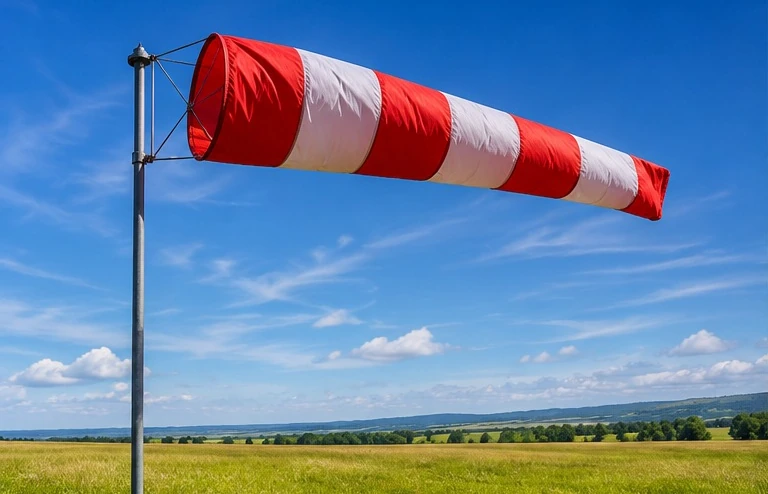
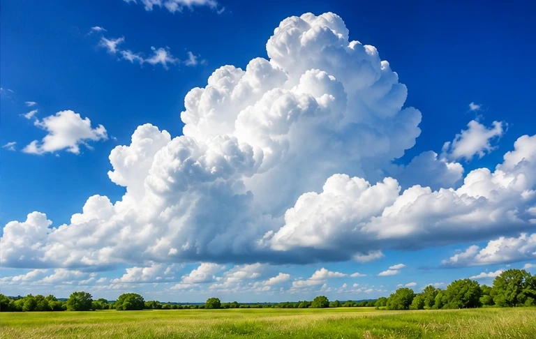
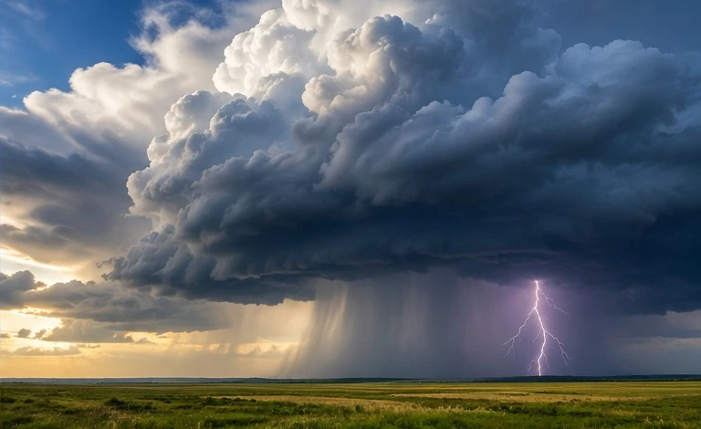
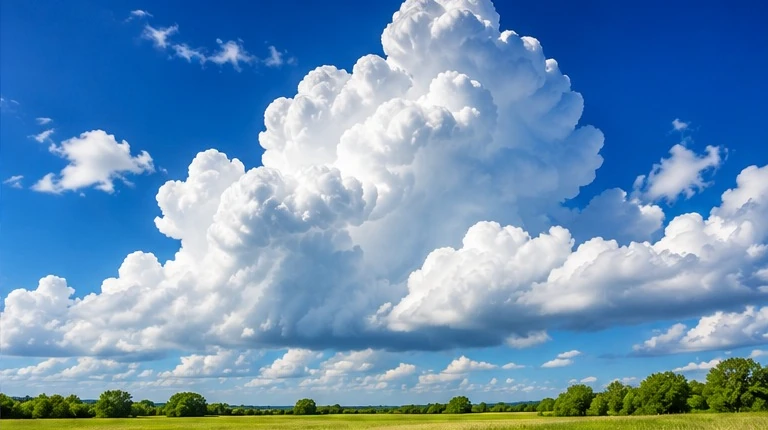

EARTH EXPLORERS / SCIENCE READER
The Atmosphere
The Invisible World Around Us
01 / DISCOVER
What Is the Atmosphere?
The atmosphere is a blanket of gases around Earth. These gases make up the air.
We cannot see most of the air. But air is all around us. We breathe air every day.
AMAZING FACTFrom space, our atmosphere can look like a thin blue line.
02 / EXPLORE
Can You Feel the Air?
Wind is moving air. We can feel wind on our skin.
A gentle wind is a breeze. Strong wind can move branches and push clouds.

A windsock moves in the wind · IllustrationLOOK + THINKHow can you tell the air is moving? Point to something in the picture.
What Are Clouds Made Of?
Clouds are made of tiny drops of water or small pieces of ice.
Water vapor can rise into the air. When the air cools, tiny water drops can form a cloud.

Tiny drops make clouds · IllustrationSPHERE CONNECTIONClouds form in the atmosphere. Their water also connects to the hydrosphere.
03 / CONNECT
When Weather Gets Wild
Some clouds grow very tall and dark. A storm can bring strong wind, rain, thunder, and lightning.
Lightning is a bright flash of electricity. Thunder is the sound we hear after lightning.

Thunderstorm over land · IllustrationSTAY SAFEIf you hear thunder, go inside a building.
Why Do We Need Air?
It gives people and animals air to breathe.
It helps keep Earth warm enough for many living things.
Another amazing job: High above us, ozone in the atmosphere helps protect life from some harmful sunlight.

THE ATMOSPHERE HELPS LIFE · IllustrationTALK ABOUT ITTell a partner one way the atmosphere helps life.
04 / YOUR MISSION
Earth Is Connected!
A cloud forms in the atmosphere. Rain falls from the cloud.
Rain adds water to rivers. It helps plants grow. It can move soil and small rocks.
FOUR SPHERESOne weather event can affect all four spheres.
AIRWATERLANDLIFE